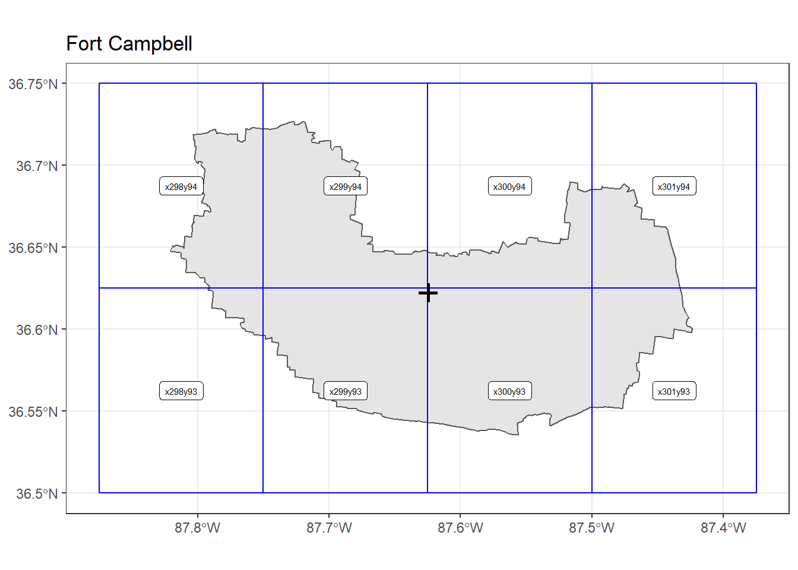
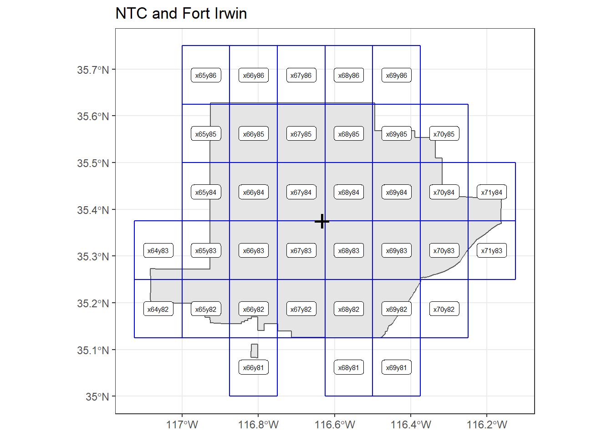

Shapefile and Grid Geometries
Load Military Installations, Ranges, and Training Areas (MIRTA) Dataset
Accessed from: https://catalog.data.gov/dataset/military-installations-ranges-and-training-areas.
Metadata updated date: January 18, 2017.
Join Fort Benning Georgia and Alabama shapefiles. Note: Fort Lewis (JBLM) geometry includes remote sites.
bases <- here::here("data/installations_ranges", "MIRTA_Boundaries.shp") %>%
sf::st_read(stringsAsFactors = FALSE) %>%
janitor::clean_names()## Reading layer `MIRTA_Boundaries' from data source `C:\Users\slewa\Projects\heat_stress\data\installations_ranges\MIRTA_Boundaries.shp' using driver `ESRI Shapefile'
## Simple feature collection with 750 features and 6 fields
## geometry type: MULTIPOLYGON
## dimension: XY
## bbox: xmin: -168.8576 ymin: 13.30706 xmax: 174.1565 ymax: 64.87792
## epsg (SRID): 4326
## proj4string: +proj=longlat +datum=WGS84 +no_defs## Edit Fort Benning geometries
benning_join <-
bases %>%
filter(stringr::str_detect(site_name, "Fort Benning")) %>%
dplyr::select(geometry) %>% st_union()
bases <- bases %>%
filter(site_name != "Fort Benning") %>%
mutate(geometry = replace(geometry, site_name == "Fort Benning GA", benning_join ))
rm(benning_join)
## Edit Fort Lewis (JBLM) geometries to remove remote polygons
## Include sites near Yakima, WA and Camp Rilea, OR
# "Before" plot
bases %>%
filter(site_name == "Fort Lewis") %>%
ggplot() +
geom_sf() +
ggtitle("Fort Lewis (JBLM) - Before") # Set bounding box
jblm_filt_bbox <-
sf::st_bbox(c(xmin = -123,
ymin = 46.8,
xmax = -122,
ymax = 47.2),
crs = st_crs(4326)) %>%
sf::st_as_sfc(.)
# separate MULTIPOLYGON to POLYGON(s)
jblm_polygon <-
bases %>%
filter(site_name == "Fort Lewis") %>%
sf::st_cast(., "POLYGON")## Warning in st_cast.sf(., "POLYGON"): repeating attributes for all sub-geometries
## for which they may not be constant# identify polygons within bbox
jblm_new_geom <-
sf::st_within(jblm_polygon$geometry, jblm_filt_bbox) ## although coordinates are longitude/latitude, st_within assumes that they are planar# add column for within box status
jblm_polygon <-
jblm_polygon %>%
mutate(within_bbox = lapply(jblm_new_geom, `[`, 1)) %>%
filter(within_bbox == 1) %>%
dplyr::select(-within_bbox) %>%
sf::st_union()
# replace Fort Lewis geometry in main dataframe
bases <- bases %>%
mutate(geometry = replace(geometry, site_name == "Fort Lewis", jblm_polygon))
rm(jblm_filt_bbox, jblm_new_geom, jblm_polygon)
# "After" plot
bases %>%
filter(site_name == "Fort Lewis") %>%
ggplot() +
geom_sf() +
ggtitle("Fort Lewis (JBLM) - After") Select installations
Select bases for analyses. Citeria: in list of top CONUS bases for heat illnesses from MSMR report (April 2018). Additional Army installations based on HSI counts and rates (from DMED) and for diversity of climate regions.
Add centroid column.
# Look-up base name in MITRA list
# search_names <- bases$site_name %>% as.character()
# stringr::str_subset(search_names, "Lewis")
select_bases <-
bases %>%
dplyr::filter(.$site_name %in% c("Fort Benning GA", "Fort Bragg","Fort Campbell",
"Fort Jackson", "Fort Polk", "Fort Hood",
"Fort Stewart", "Fort Leonard Wood", "Fort Riley",
"NTC and Fort Irwin", "Fort Bliss", "Fort Lewis",
"Fort Sill", "Fort Carson", "Fort Gordon",
"Fort Drum", "MCB Camp Lejeune", "MCRD Beaufort Parris Island",
"MCB Camp Pendleton", "MCRD San Diego", "MCB Quantico",
"Twentynine Palms Main Base", "Lackland AFB", "Eglin AFB", "Fort Sam Houston")) %>%
mutate(centroid = st_centroid(geometry)) %>%
dplyr::select(-c("joint_base", "country", "oper_stat"))
# saveRDS(select_bases, "data/select_bases.rds")
select_bases## Simple feature collection with 25 features and 3 fields
## Active geometry column: geometry
## geometry type: GEOMETRY
## dimension: XY
## bbox: xmin: -122.8021 ymin: 29.36673 xmax: -75.38405 ymax: 47.15951
## epsg (SRID): 4326
## proj4string: +proj=longlat +datum=WGS84 +no_defs
## First 10 features:
## component site_name state_terr
## 1 Army Active Fort Benning GA Georgia
## 2 Army Active Fort Campbell Kentucky
## 3 MC Active MCB Quantico Virginia
## 4 MC Active MCRD San Diego California
## 5 Army Active Fort Riley Kansas
## 6 Army Active NTC and Fort Irwin California
## 7 Army Active Fort Gordon Georgia
## 8 MC Active Twentynine Palms Main Base California
## 9 Army Active Fort Sill Oklahoma
## 10 Army Active Fort Carson Colorado
## geometry centroid
## 1 POLYGON ((-84.8882 32.25929... POINT (-84.81164 32.3917)
## 2 MULTIPOLYGON (((-87.65135 3... POINT (-87.62461 36.6222)
## 3 MULTIPOLYGON (((-77.4884 38... POINT (-77.4572 38.55207)
## 4 MULTIPOLYGON (((-117.2036 3... POINT (-117.1977 32.74017)
## 5 MULTIPOLYGON (((-96.93518 3... POINT (-96.82482 39.20675)
## 6 MULTIPOLYGON (((-116.389 35... POINT (-116.6333 35.37432)
## 7 MULTIPOLYGON (((-82.11816 3... POINT (-82.23727 33.35667)
## 8 MULTIPOLYGON (((-116.3095 3... POINT (-116.1387 34.45805)
## 9 MULTIPOLYGON (((-98.64978 3... POINT (-98.52759 34.69519)
## 10 MULTIPOLYGON (((-104.7321 3... POINT (-104.853 38.47304)## Plot selected installations
purrr::map(select_bases$site_name,
function(x) {
ggplot() +
geom_sf(data = filter(select_bases, site_name == x)) +
geom_sf(data = st_centroid(filter(select_bases, site_name == x))) +
ggtitle(x) +
theme_bw() +
theme(axis.text.x = element_text(size = rel(1)),
axis.text.y = element_text(size = rel(1)))
})
#cowplot::plot_grid(plotlist = bases_plot)Load NLDAS grids
NLDAS grid shapefile from: https://ldas.gsfc.nasa.gov/sites/default/files/ldas/nldas/NLDAS_Grid_Reference.zip
nldas_grid <-
here::here("data/nldas_grids", "NLDAS_Grid_Reference.shp") %>%
sf::st_read(stringsAsFactors = FALSE) %>%
janitor::clean_names()## Reading layer `NLDAS_Grid_Reference' from data source `C:\Users\slewa\Projects\heat_stress\data\nldas_grids\NLDAS_Grid_Reference.shp' using driver `ESRI Shapefile'
## Simple feature collection with 103936 features and 5 fields
## geometry type: POLYGON
## dimension: XY
## bbox: xmin: -125 ymin: 25 xmax: -67 ymax: 53
## epsg (SRID): 4326
## proj4string: +proj=longlat +datum=WGS84 +no_defsnldas_grid## Simple feature collection with 103936 features and 5 fields
## geometry type: POLYGON
## dimension: XY
## bbox: xmin: -125 ymin: 25 xmax: -67 ymax: 53
## epsg (SRID): 4326
## proj4string: +proj=longlat +datum=WGS84 +no_defs
## First 10 features:
## centerx centery nldas_x nldas_y nldas_id geometry
## 1 -124.9375 25.0625 1 1 x1y1 POLYGON ((-124.875 25, -125...
## 2 -124.8125 25.0625 2 1 x2y1 POLYGON ((-124.75 25, -124....
## 3 -124.6875 25.0625 3 1 x3y1 POLYGON ((-124.625 25, -124...
## 4 -124.5625 25.0625 4 1 x4y1 POLYGON ((-124.5 25, -124.6...
## 5 -124.4375 25.0625 5 1 x5y1 POLYGON ((-124.375 25, -124...
## 6 -124.3125 25.0625 6 1 x6y1 POLYGON ((-124.25 25, -124....
## 7 -124.1875 25.0625 7 1 x7y1 POLYGON ((-124.125 25, -124...
## 8 -124.0625 25.0625 8 1 x8y1 POLYGON ((-124 25, -124.125...
## 9 -123.9375 25.0625 9 1 x9y1 POLYGON ((-123.875 25, -124...
## 10 -123.8125 25.0625 10 1 x10y1 POLYGON ((-123.75 25, -123....NLDAS and Installation Grid Overlap
# Identify all NLDAS grids intersected by installation shapefiles
bases_nldas = NULL
for (i in 1:nrow(select_bases)) {
i_base = select_bases[i,]
base_nldas = st_intersection(i_base, nldas_grid)
bases_nldas = rbind(bases_nldas, base_nldas)
}
bases_nldas## Simple feature collection with 300 features and 8 fields
## Active geometry column: centroid
## geometry type: POINT
## dimension: XY
## bbox: xmin: -122.8021 ymin: 29.36673 xmax: -75.38405 ymax: 47.15951
## epsg (SRID): 4326
## proj4string: +proj=longlat +datum=WGS84 +no_defs
## First 10 features:
## component site_name state_terr centerx centery nldas_x nldas_y
## 1 Army Active Fort Benning GA Georgia -84.9375 32.1875 321 58
## 1.1 Army Active Fort Benning GA Georgia -84.8125 32.1875 322 58
## 1.2 Army Active Fort Benning GA Georgia -85.0625 32.3125 320 59
## 1.3 Army Active Fort Benning GA Georgia -84.9375 32.3125 321 59
## 1.4 Army Active Fort Benning GA Georgia -84.8125 32.3125 322 59
## 1.5 Army Active Fort Benning GA Georgia -84.6875 32.3125 323 59
## 1.6 Army Active Fort Benning GA Georgia -84.9375 32.4375 321 60
## 1.7 Army Active Fort Benning GA Georgia -84.8125 32.4375 322 60
## 1.8 Army Active Fort Benning GA Georgia -84.6875 32.4375 323 60
## 1.9 Army Active Fort Benning GA Georgia -84.8125 32.5625 322 61
## nldas_id geometry centroid
## 1 x321y58 MULTIPOLYGON (((-84.90602 3... POINT (-84.81164 32.3917)
## 1.1 x322y58 POLYGON ((-84.81997 32.25, ... POINT (-84.81164 32.3917)
## 1.2 x320y59 POLYGON ((-85 32.29875, -85... POINT (-84.81164 32.3917)
## 1.3 x321y59 POLYGON ((-84.8882 32.25929... POINT (-84.81164 32.3917)
## 1.4 x322y59 POLYGON ((-84.75 32.33047, ... POINT (-84.81164 32.3917)
## 1.5 x323y59 POLYGON ((-84.65872 32.375,... POINT (-84.81164 32.3917)
## 1.6 x321y60 MULTIPOLYGON (((-84.97334 3... POINT (-84.81164 32.3917)
## 1.7 x322y60 POLYGON ((-84.875 32.45522,... POINT (-84.81164 32.3917)
## 1.8 x323y60 POLYGON ((-84.63749 32.5, -... POINT (-84.81164 32.3917)
## 1.9 x322y61 POLYGON ((-84.84992 32.5, -... POINT (-84.81164 32.3917)rm(i_base, base_nldas)
# Calculate area of installation in each NLDAS grid and weight for spatial weighted average
nldas_weights <- bases_nldas %>%
mutate(area = sf::st_area(.$geometry)) %>%
group_by(site_name) %>%
mutate(sum_area = sum(area),
weight = (area / sum_area)) %>%
dplyr::select(-c(nldas_x, nldas_y, area, centroid, sum_area))
# NLDAS grids that intersect with bases (to map full grid squares)
intersects = NULL
for (i in 1:nrow(select_bases)) {
i_base = select_bases[i,]
base_intersect = nldas_grid %>% filter(lengths(st_intersects(., i_base)) > 0)
intersects = rbind(intersects, base_intersect)
}
rm(i_base, base_intersect)
# Join `site_name` to selected NLDAS grid geometries
intersects <- intersects %>% left_join(dplyr::select(as_tibble(nldas_weights), c(nldas_id, site_name)), by = "nldas_id")
intersects ## Simple feature collection with 300 features and 6 fields
## geometry type: POLYGON
## dimension: XY
## bbox: xmin: -122.875 ymin: 29.25 xmax: -75.375 ymax: 47.25
## epsg (SRID): 4326
## proj4string: +proj=longlat +datum=WGS84 +no_defs
## First 10 features:
## centerx centery nldas_x nldas_y nldas_id site_name
## 1 -84.9375 32.1875 321 58 x321y58 Fort Benning GA
## 2 -84.8125 32.1875 322 58 x322y58 Fort Benning GA
## 3 -85.0625 32.3125 320 59 x320y59 Fort Benning GA
## 4 -84.9375 32.3125 321 59 x321y59 Fort Benning GA
## 5 -84.8125 32.3125 322 59 x322y59 Fort Benning GA
## 6 -84.6875 32.3125 323 59 x323y59 Fort Benning GA
## 7 -84.9375 32.4375 321 60 x321y60 Fort Benning GA
## 8 -84.8125 32.4375 322 60 x322y60 Fort Benning GA
## 9 -84.6875 32.4375 323 60 x323y60 Fort Benning GA
## 10 -84.8125 32.5625 322 61 x322y61 Fort Benning GA
## geometry
## 1 POLYGON ((-84.875 32.125, -...
## 2 POLYGON ((-84.75 32.125, -8...
## 3 POLYGON ((-85 32.25, -85.12...
## 4 POLYGON ((-84.875 32.25, -8...
## 5 POLYGON ((-84.75 32.25, -84...
## 6 POLYGON ((-84.625 32.25, -8...
## 7 POLYGON ((-84.875 32.375, -...
## 8 POLYGON ((-84.75 32.375, -8...
## 9 POLYGON ((-84.625 32.375, -...
## 10 POLYGON ((-84.75 32.5, -84....Plots with intersecting NLDAS grids
select_bases$site_name <- purrr::set_names(select_bases$site_name)
base_grid_plot_function <- function(x) {
ggplot() +
geom_sf(data = filter(select_bases, site_name == x)) +
geom_sf(data = filter(intersects, site_name == x), fill = NA, color = "blue") +
geom_sf(data = st_centroid(filter(select_bases, site_name == x)), shape = 3, size = 3, stroke = 1.5) +
geom_label(data = filter(intersects, site_name == x), aes(x = centerx, y = centery, label = nldas_id), size = 2) +
ggtitle(x) +
theme_bw() +
theme(axis.text.x = element_text(size = rel(1)),
axis.text.y = element_text(size = rel(1)),
axis.title.x = element_blank(),
axis.title.y = element_blank())
}
# base_grid_plot_function(select_bases$site_name[1])
base_grid_plots <-
map(select_bases$site_name, ~base_grid_plot_function(.x))
base_grid_plots## [[1]]##
## [[2]]
##
## [[3]]##
## [[4]]
##
## [[5]]##
## [[6]]
##
## [[7]]##
## [[8]]##
## [[9]]
##
## [[10]]##
## [[11]]##
## [[12]]##
## [[13]]##
## [[14]]##
## [[15]]##
## [[16]]##
## [[17]]##
## [[18]]##
## [[19]]##
## [[20]]##
## [[21]]##
## [[22]]##
## [[23]]
##
## [[24]]##
## [[25]]